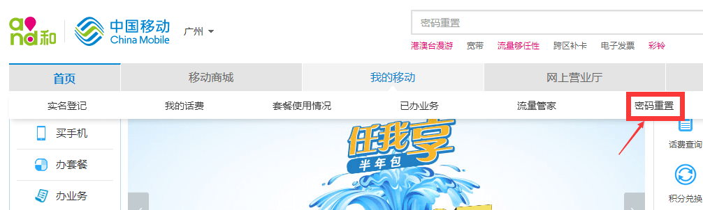
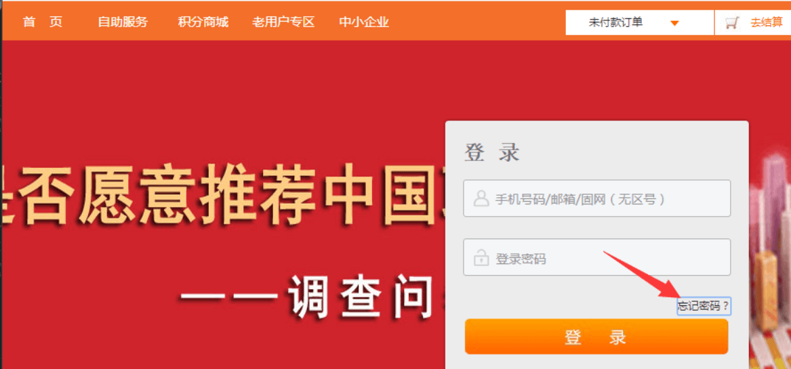
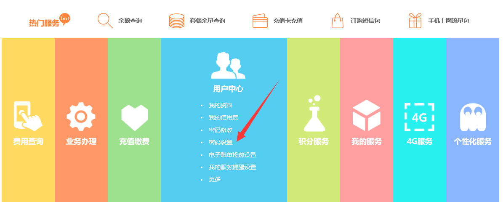

方式一：登录中国移动网上服务大厅http://www.10086.cn，选择“我的移动”-“密码重置”
方式二：下载“中国移动10086”手机app，进入app内进行重置密码操作
方式一：登录中国联通网上营业厅http://iservice.10010.com/e4/，选择“忘记密码”，按提示操作
方式二：下载“中国联通手机营业厅”手机app，进入app内进行重置密码操作
方式一：登录中国电信网上营业厅http://gd.189.cn/，选择“自助服务”-“用户中心”-“密码设置”
方式二：下载“电信营业厅”手机app，进入app内进行重置密码操作